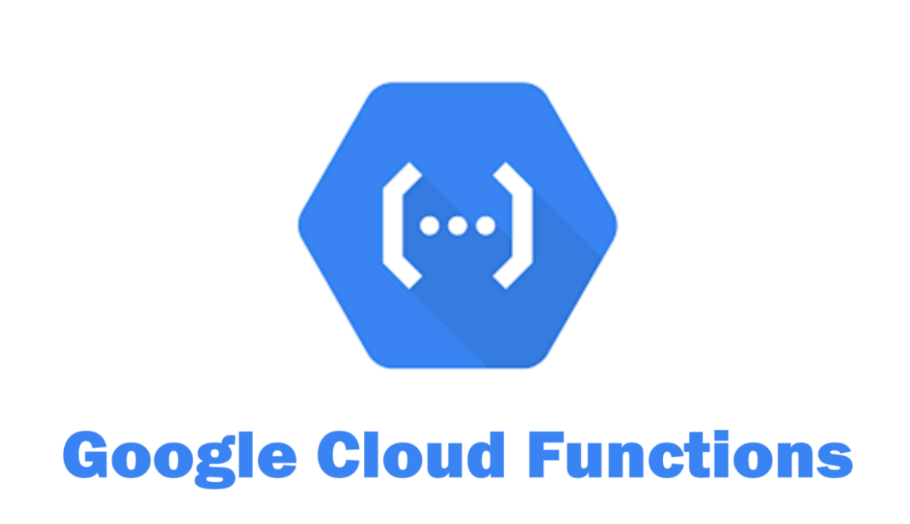
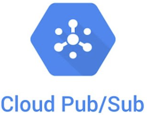
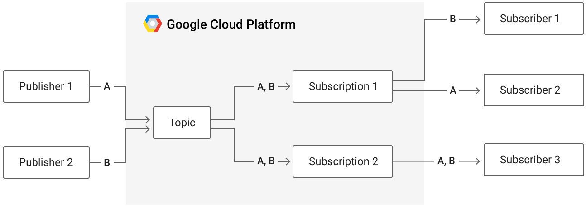

In this lab, we will create a Cloud Function that will be triggered when an image is uploaded to a storage bucket. It will then analyze the image for violent, gory content and create a new image that blurs the content out.
Bring up a Cloud Shell session and clone the Python samples repository. Change into the directory containing the function.
git clone https://github.com/GoogleCloudPlatform/python-docs-samples.git cd python-docs-samples/functions/imagemagick
Create a storage bucket for uploading images to that has a globally unique bucket name.
gsutil mb gs://<UNIQUE_BUCKET_INPUT>
Create another storage bucket for the Cloud Function to store the blurred images to that also has a globally unique bucket name.
gsutil mb gs://<UNIQUE_BUCKET_OUTPUT>
We will be using a number of GCP APIs for the lab. One of them is GCP's Cloud Vision API so that we can analyze the content of images. This service contains machine learning models that have been trained using Google's massive collection of labeled images. Ensure that the Cloud Vision API has been enabled by performing the command below in Cloud Shell.
gcloud services enable vision.googleapis.com
Repeat the process of enabling APIs for the Cloud Functions API and the Cloud Build API using the UI as above or via command-line. These APIs allow us to build the function and deploy it on GCP.
gcloud services enable cloudfunctions.googleapis.com gcloud services enable cloudbuild.googleapis.com
The code for this Cloud Function is written in Python and resides in main.py. It first imports the packages we rely upon (e.g. the Google Cloud SDK's storage and vision packages) as well as ImageMagick, an open-source image manipulation toolkit. It then instantiates a storage client to interact with buckets as well as a vision client to interact with Google's VIsion API. The Cloud Vision service supports several different types of clients. Since we are only looking to determine the goriness of an image, we instantiate an image annotation client.
import os
import tempfile
from google.cloud import storage, vision
from wand.image import Image
storage_client = storage.Client()
vision_client = vision.ImageAnnotatorClient() The main function is blur_offensive_images. When triggered, the function is passed information about an event that it can use to process it (data, context). The function first retrieves the file_name and the bucket_name that triggered the event. It pulls the file into the program as a blob, then begins the construction of a dictionary that includes the URI of the new object that it can then send to the Vision API as JSON. Note the use of Python 3.6 f-string (concise formatted string).
# Blurs uploaded images that are flagged as Adult or Violence.
def blur_offensive_images(data, context):
file_data = data
file_name = file_data['name']
bucket_name = file_data['bucket']
blob = storage_client.bucket(bucket_name).get_blob(file_name)
blob_uri = f'gs://{bucket_name}/{file_name}'
blob_source = {'source': {'image_uri': blob_uri}}The function then calls the safe_search_detection functionality of the Vision annotation client to have the Vision API detect what's in the picture with the result being stored in detected. Safe search detects inappropriate image content. The ratings range from 0 to 5, with 5 being inappropriate. As the code shows, when Vision annotates an image with a 5 for either adult content or violent (bloody) content, a function to blur the image is then called with the blob that has been downloaded from the bucket earlier.
result = vision_client.safe_search_detection(blob_source)
detected = result.safe_search_annotation
# Process image
if detected.adult == 5 or detected.violence == 5:
print(f'The image {file_name} was detected as inappropriate.')
return __blur_image(blob)
else:
print(f'The image {file_name} was detected as OK.') Visit the file and examine the code for __blur_image.
Answer the following questions for your lab notebook:
Once blurred, the function uses the storage client to get a handle on the output storage bucket, creates a new blob in the bucket with the same file_name, then uploads the image to it. Finally, it removes the temporary file created previously.
# Upload result to a second bucket, to avoid re-triggering the function.
blur_bucket_name = os.getenv('BLURRED_BUCKET_NAME')
blur_bucket = storage_client.bucket(blur_bucket_name)
new_blob = blur_bucket.blob(file_name)
new_blob.upload_from_filename(temp_local_filename)
print(f'Blurred image uploaded to: gs://{blur_bucket_name}/{file_name}')
# Delete the temporary file.
os.remove(temp_local_filename)Our function requires read/write access to storage buckets. Cloud Functions by default are run using the App Engine default service account.
$GOOGLE_CLOUD_PROJECT@appspot.gserviceaccount.comTo allow the function to access the storage buckets , we must add the appropriate permissions to the service account. The Cloud Function will create and access files from a storage bucket. A suitable role that can be attached to the service account that will include these permissions is the Storage Object Admin role. Using the command below, add this role to the App Engine default service account in the project's IAM policy.
gcloud projects add-iam-policy-binding $GOOGLE_CLOUD_PROJECT \
--member=serviceAccount:$GOOGLE_CLOUD_PROJECT@appspot.gserviceaccount.com \
--role='roles/storage.objectAdmin'We will now deploy the function. As part of the trigger, we need to specify the triggering event. In this case, it needs to be triggered when a new file appears in the input storage bucket as indicated in the command below with the --trigger-bucket flag. The function reads the output bucket name from environment variables so we need to set them in our deployment command.
gcloud functions deploy blur_offensive_images \ --runtime python37 \ --trigger-bucket <UNIQUE_BUCKET_INPUT> \ --set-env-vars BLURRED_BUCKET_NAME=<UNIQUE_BUCKET_OUTPUT>
In Cloud Shell, use wget to download an image of a flesh-eating zombie.
wget https://cdn.pixabay.com/photo/2015/09/21/14/24/zombie-949916_1280.jpg
Then, upload the image to the input bucket via the web console or command-line below:
gsutil cp zombie*.jpg gs://<UNIQUE_BUCKET_INPUT>
Once uploaded, the function should automatically execute via the bucket trigger and blur the image.
The log entries for the functions can be read via the web console or command-line via
gcloud functions logs read
Delete the function you created in the web console of Cloud Functions or from the command line in Cloud Shell.
gcloud functions delete blur_offensive_images
Delete the two storage buckets you created either in the web console or from the command line.
gsutil rm -r gs://<UNIQUE_BUCKET_INPUT> gsutil rm -r gs://<UNIQUE_BUCKET_OUTPUT>

Publish-Subscribe message queues that can support both push and pull delivery of messages provide an essential role in connecting different functions of complex cloud applications together such as data processing pipelines. Google Cloud's Pub/Sub is one example of this. With the service, a topic is created that a number of publishers can send message data to. Subscribers that wish to receive these messages then create subscriptions that can be used to receive all messages sent to particular topics.

In this lab, we will create a topic and then publish messages onto it. We'll then implement a pull-based subscriber to create a subscription to receive these messages. This will be done first within the CLI and then programmatically via Python.
To begin with, bring up Cloud Shell to create a VM. For this lab, the VM will need permissions to subscribe to PubSub topics. Create a service account for doing so.
gcloud iam service-accounts create pubsub-labWe must now add the storage role to the service account so that it can view objects in storage buckets on our project. To do so, we add a policy specifying this. Note that the command below assumes that your Cloud Shell session is bound to your current Google Cloud Project identifier.
gcloud projects add-iam-policy-binding ${GOOGLE_CLOUD_PROJECT} \
--member serviceAccount:pubsub-lab@${GOOGLE_CLOUD_PROJECT}.iam.gserviceaccount.com \
--role roles/pubsub.editorThen, launch the VM with the service account attached:
gcloud compute instances create pubsub \
--image-project ubuntu-os-cloud --image-family ubuntu-2004-lts \
--machine-type e2-medium --zone us-west1-b \
--service-account pubsub-lab@${GOOGLE_CLOUD_PROJECT}.iam.gserviceaccount.comThen, bring up an ssh session on the VM.
In Cloud Shell, begin by creating a topic using your OdinId (e.g. $USER) that publishers will send message data to.
gcloud pubsub topics create topic-${USER}When the command returns, the name of the topic is also returned. Topic names have the format below:
projects/${GOOGLE_CLOUD_PROJECT}/topics/...Fill in the topic name in the command below and publish a message onto the topic.
gcloud pubsub topics publish <topic_name>
--message="Message #1"The operation will return a messageId upon success. If there are active subscriptions to this topic, Cloud PubSub will store the message and deliver it to subscribers whenever they pull messages from their subscriptions. When all subscribers of a message have acknowledged receipt of the message, Cloud PubSub will then delete the message.
In the VM, we'll emulate a subscriber. First, create a subscription using your OdinId that you will use to subscribe to a topic. Set its topic to the one created in Cloud Shell.
gcloud pubsub subscriptions create sub-${USER} \
--topic=<topic_name>By default, the subscription we create will be pull-based. One can specify push-based subscriptions using a variety of flags when creating subscriptions.
Attempt to pull a message from the subscription.
gcloud pubsub subscriptions pull sub-$USERBack in Cloud Shell, publish a second message onto the topic.
gcloud pubsub topics publish <topic_name>
--message="Message #2"messageId of the published message?Then, back in the VM, attempt to pull a message from the subscription again.
gcloud pubsub subscriptions pull sub-${USER}The message from Cloud Shell should be received within the VM, with an acknowledgement sent back to Cloud Pub/Sub, notifying the service that the message has been received by all of its subscribers and can be deleted.
messageId.While the prior example shows an example of Cloud PubSub from the CLI, it is typically used programmatically in order to connect parts of a distributed cloud application together. To show how this is done, we'll create a publisher in Python within Cloud Shell and a subscriber in Python within the VM, sending messages from Cloud Shell to the VM through the topic and subscriptions we create.
To begin with, on the VM, install the Python tools.
sudo apt update -y
sudo apt install virtualenv python3-pipThen, on both Cloud Shell and on the VM, create a Python environment, activate it, and install the PubSub package.
virtualenv -p python3 env source env/bin/activate pip install google-cloud-pubsub
Begin by creating a Python program that implements a publisher. The code initially imports the packages required then creates a topic (my_topic). Because topics are associated with particular projects, fill in GOOGLE_CLOUD_PROJECT with the Project ID of your project. After creating a PubSub client, the code then retrieves the topic given its name, creating the topic if it does not exist.
import datetime
from google.cloud import pubsub_v1
google_cloud_project = 'GOOGLE_CLOUD_PROJECT'
topic_name = f'projects/{google_cloud_project}/topics/my_topic'
publisher = pubsub_v1.PublisherClient()
try:
publisher.get_topic(topic=topic_name)
except:
publisher.create_topic(name=topic_name)Once we've associated the publisher to a topic, we can then run a loop which prompts the user for message data, then publishes the message onto the topic along with a timestamp, printing out the messageId that is then returned.
while True:
msg = input('Enter a message to send: ')
now = datetime.datetime.now().strftime('%Y-%m-%d %H:%M:%S')
message = f'{now} ({topic_name}) : {msg}'
message_id = publisher.publish(topic_name, data=message.encode('utf-8')).result()
print(f'Published {message_id} to topic {topic_name}')After creating the file, run the program and keep it running while creating a subscriber in the VM.
python3 publisher.pyWe'll now create a subscriber in Python that creates a subscription (my_subscription) and reads messages that are published onto my_topic by the publisher running in Cloud Shell.
The code below imports the packages, specifies the topic name to subscribe to, specifies the name of the subscription to create, then creates a subscription for the topic. Begin by filling in the GOOGLE_CLOUD_PROJECT that will be used to name the topic and subscription in the code below.
import datetime
from google.cloud import pubsub_v1
google_cloud_project = 'GOOGLE_CLOUD_PROJECT '
topic_name = f'projects/{google_cloud_project}/topics/my_topic'
subscription_name = f'projects/{google_cloud_project}/subscriptions/my_subscription'
subscriber = pubsub_v1.SubscriberClient()
try:
subscriber.create_subscription(name=subscription_name, topic=topic_name)
except Exception as e:
print(f"Using subscription previously created...")With the subscription created for the topic, we can now subscribe to future messages that come in on the topic. Reading messages from a subscription is done asynchronously through the subscriber's futures module. We set up the future by registering a callback function that executes when a message is received from the subscription. First, we define the callback function that prints out the message and then acknowledges it.
def callback(message):
print(f'Received message {message.message_id}: {message.data.decode()}')
message.ack()Then, in our main program, we create a subscriber (future) and calling future.result() which will block synchronously until a message is received. If a keyboard interrupt is received, the future is canceled and the script terminates.
future = subscriber.subscribe(subscription_name, callback)
try:
future.result()
except KeyboardInterrupt:
future.cancel()After creating the file, run the program and keep it running.
python3 subscriber.pyGo back to your Cloud Shell session running the publisher. Then, enter several messages.
messageIds and messages sentThen, go back to the VM session running the subscriber. The messages from the publisher should appear along with their messageIds.
messageIds and messages receivedAfter successfully demonstrating the functionality of the programs, type "Ctrl+c" in both Cloud Shell and in the VM to terminate the publisher and subscriber programs. Then, exit out of the VM.
Finally, in Cloud Shell, delete the subscriptions and the topics created for the lab.
gcloud pubsub subscriptions delete sub-${USER} my_subscription
gcloud pubsub topics delete topic-${USER} my_topicThen, delete the service account and VM
gcloud compute instances delete pubsub --zone=us-west1-b
gcloud iam service-accounts create pubsub-lab